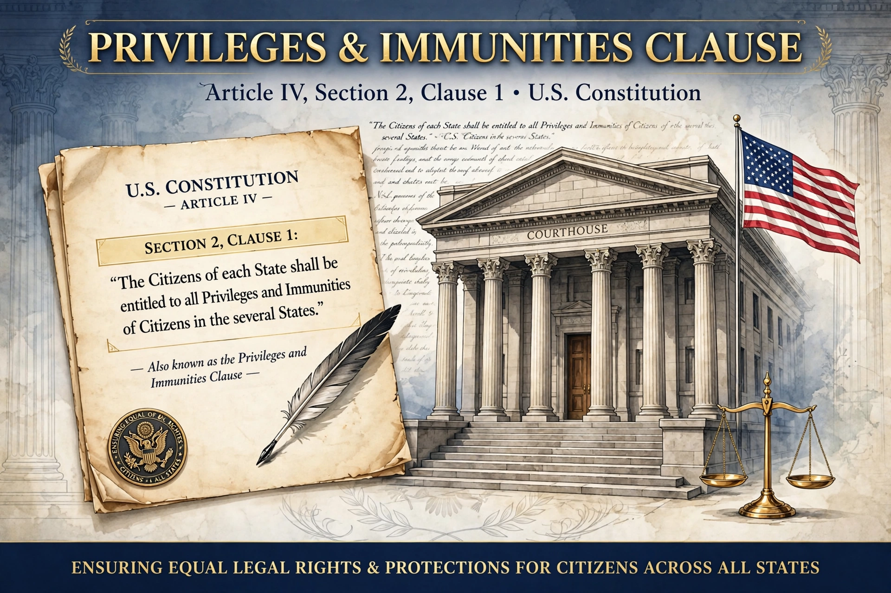

The Privileges and Immunities Clause (U.S. Constitution, Article IV, Section 2, Clause 1, also known as the Comity Clause) provides that "The Citizens of each State shall be entitled to all Privileges and Immunities of Citizens in the several States." It prevents a state from treating citizens of other states in a discriminatory manner with respect to fundamental rights.
In Corfield v. Coryell (1823), Justice Bushrod Washington described the protected privileges as those "fundamental" to citizens of free governments, including travel, access to courts, and the pursuit of livelihood. Modern doctrine, as in United Building and Construction Trades Council v. Camden (1984), asks whether a burdened privilege is fundamental, and whether the state has a substantial reason and a close fit for the discrimination.
The clause is distinct from the Privileges or Immunities Clause of the Fourteenth Amendment, narrowed in the Slaughter-House Cases (1873) and partly revived for the right to travel in Saenz v. Roe (1999). Article IV privileges also do not extend to corporations, nor to rights deemed non-fundamental such as recreational hunting licences (Baldwin v. Fish and Game Commission).